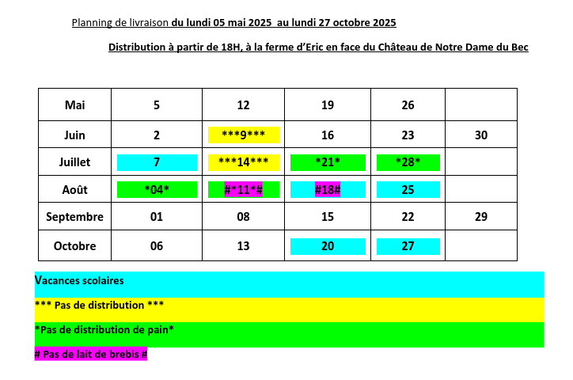

📅 Infos pratiques
👥 Producteurs :
- EARL de la renaisssance (Lait de vache)
- Le temps des saisons (Maraîcher)
- La Fournée générale (Pain)
- Fromagerie de la Garenne (Lait de brebis)
Notre page sur le réseau AMAP
📆 Calendrier 2025
Du 5 mai au 27 octobre 2025

Vacances scolaires
Pas de distribution
* Pas de pain
# Pas de lait de brebis